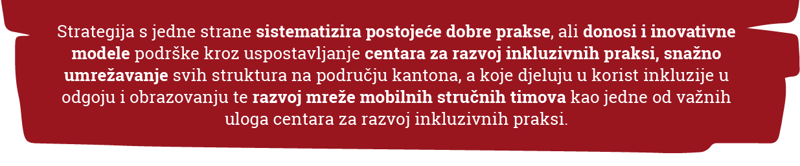
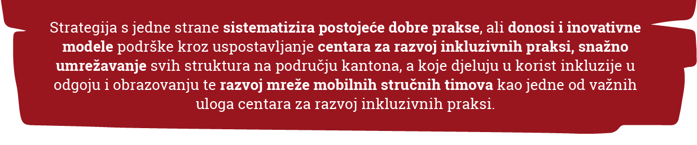

„Primjenom ove strategije obrazovanje u Kantonu Sarajevo će definitivno biti uređeno i prilagođeno potrebama djece s poteškoćama u razvoju, a time i evropskim standardima organizacije obrazovanja u njegovom najosjetljivijem segmentu.“ – Elvir Kazazović, ministar za obrazovanje, nauku i mlade u KS-u.
„Procjenjuje se da oko 10 % stanovništva BiH ima teškoće u području fizičkog, senzornog, razvojnog, mentalnog ili intelektualnog funkcionisanja. Zbog predrasuda, stigme, nedostatka informacija te nepostojanja uslova, pojedini roditelji djecu s poteškoćama ne uključuju u odgojno-obrazovni sistem. Iz tog razloga je opravdana potreba za donošenjem Strategije kako bi se sistemskim pristupom u razvoju inkluzivne prakse unaprijedio sistem rane detekcije i pružanja podrške djeci s poteškoćama u razvoju." – Zlatan Muratović, ministar za obrazovanje, nauku, kulturu i sport Tuzlanskog kantona.
"Ponosna sam što smo imali priliku da podržimo ministarstva obrazovanja u Tuzlanskom kantonu i Kantonu Sarajevo u izradi višegodišnjih strategija. Zahvaljujem se što su pokazali političku volju da pokrenu ovaj značajan proces i što smo postigli participativan pristup u izradi jedne nove politike.“ – Andrea Žeravčić, direktorica Save the Children za Sjeverozapadni Balkan.


 
